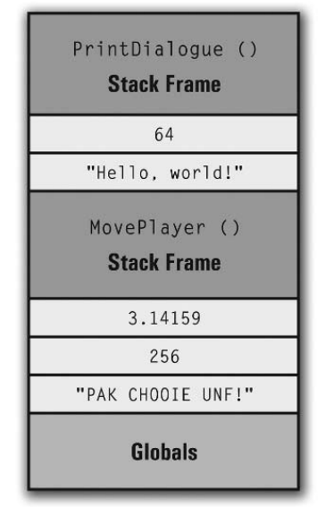
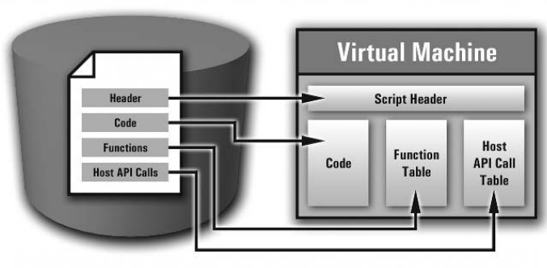
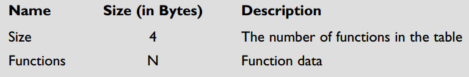

前面我们已经将汇编语言汇编成可执行文件，接下来将构建让其运行的运行时环境（XVM XtremeScript Virtual Machine）。本章将阐述虚拟机如何工作， XVM 原型和构造细节。
虚拟机
平时编写的代码最终会转换成机器码，运行在硬件上，而虚拟机模拟了硬件环境，字节码（运行在虚拟机上的代码，类似于机器码）将运行于虚拟机上。
由于虚拟机模拟了硬件环境，所以虚拟机也拥有一套运行时环境，虚拟机屏蔽了底层系统的复杂性，拥有较好的扩展性和便捷性，不过由于构建在底层系统之上，所以牺牲了一定的性能。
XVM 基本架构如下：
VM 主要部件
指令流
指令流作为程序核心，由编译后的操作码和操作数组成。
运行时栈
VM 是基于栈的体系结构，运行时栈底部包含全局变量，然后是栈帧，栈帧之间可能包含由 push 和 pop 指令压入的 0-N 个其他元素。

全局数据表
接下来两个主要的全局数据结构是：函数表和主机 API 调用表，函数表中保存了函数的相关信息， Host API Call Table 保存了主机调用函数信息。
多线程
正如操作系统支持多任务一样，VM 也支持同时运行多个脚本，每个脚本的运行时环境相互独立，但是又可以相互通信。
与主机整合
脚本语言通过集成层实现了 VM 与 Host APP 之间的通信。

虚拟机生命周期
虚拟机也像其他程序一样，拥有完整的生命周期。简要分为以下几个阶段：
- 加载脚本，初始化主要数据结构
- 定位脚本入口，开始执行周期
- 不断执行指令流中指令
- 终止执行，释放主要数据结构和其他资源
加载脚本
虚拟机首先将执行文件加载到内存，然后将执行文件中的主要数据结构装载到虚拟机运行时环境。

定位入口点并执行
在物理 CPU 执行程序时有一个指向当前指令的指针 IP(instruction pointer) ，虚拟机执行时也有相应的指令指针 PC( program counter). 在我们的脚本语言中，_Main 函数作为函数的入口点。
执行周期
当 VM 找到入口点后（通过 _Main 函数或者其他函数调用），VM 便开始源源不断的执行指令，和 CPU 指令执行过程类似，VM 也将指令执行分为几个典型的阶段：
- Opcode Identification 指令执行的第一个阶段便是获取操作码
- Operand Resolution 操作数在不同的操作符中具有不同的含义，该过程涉及到识别、定位和转换操作数。该过程称为
operand resolution，在指令执行周期中是最复杂的。 - Instruction Execution 一旦获取了操作符和操作数，就需要根据指令的语义执行相应的逻辑了。
- Store Results 许多指令执行完后都需要保存相应的结果，该阶段将指令执行结果存入目标地址。
函数调用
由于 XASM 核心操作之一就是函数调用，所以怎么实现函数的调用和返回至关重要。
函数调用
函数调用的基本步骤是：压入函数参数、压入返回地址和压入本地变量。
不过这里存在两个问题：
在函数执行完成返回时，怎么才能知道 Return Address 距离栈顶多远呢？
只有通过函数结构能够读取到 Ret 指令位置，还记得前面介绍局部变量时，起始位置是从 -2 开始的，-1 便是为存储函数索引保留的。
第二个问题是函数弹出栈帧时，运行栈的 iFrameIndex 指针需要更新为指向前一个栈帧
理想的情况是弹出栈帧后，栈顶便为前一个栈帧的 iFrameIndex ，但是如果栈帧之间通过 push 指令压入了其他元素，那么我们便无法定位前一个栈帧正确的 iFrameIdex 了。由于前面我们已经预留了一个位置保持函数返回地址，与此同时也可以将 iFrameIdex 存放在该位置。
总结一下函数调用过程：
- 从函数表中获取函数信息
- 压入函数返回值
- 压入栈帧。栈帧大小为本地数据大小加上 Ret 指令
- 将 调用函数的
iFuncIndex和前一个栈帧的栈顶索引iOffsetIndex存入栈顶元素
函数返回
为了从函数返回，弹出栈顶元素，通过 iFuncIndex 取得函数信息，计算返回值位置，弹出当前栈帧，更新新的栈顶元素的 iFrameIdex 和 iTopIndex ，然后通过无条件跳转到返回地址。
终止和关闭虚拟机
脚本运行完成后，一定记得释放资源，否则多次运行脚本后，会造成内存溢出。
XVM 原型架构
XVM 原型包含 Script Header,Instruction Stream,Runtime Stack,Function Table 和 Host API Call Table。
Script header
脚本头包含以下内容：
- A Pause Flag.
- The Presence of _Main ().
- _Main ()’s Function Index.
- Global Data Size.
- The _RetVal Register.
Runtime Values
由于脚本语言是无类型的，所以不能用类似 C 语言的 int,float 或者 char* 代表运行时值，因为运行过程中可能从一种数据类型转换到另一种数据类型，所以需要用一个结构体代表运行时值（runtime values），结构体如下
typedef struct _Value // A runtime value
{
int iType; // Type
union // The value
{
int iIntLiteral; // Integer literal
float fFloatLiteral; // Float literal
char * pstrStringLiteral; // String literal
int iStackIndex; // Stack Index
int iInstrIndex; // Instruction index
int iFuncIndex; // Function index
int iHostAPICallIndex; // Host API Call index
int iReg; // Register code
};
int iOffsetIndex; // Index of the offset
}
Value;指令流
指令流的结构和执行文件中指令流的表示方式类似：
typedef struct _Instr // An instruction
{
int iOpcode; // The opcode
int iOpCount; // The number of operands
Value * pOpList; // The operand list
}
Instr;运行时栈
运行时栈以栈为基础，栈中元素便是运行时值（runtime values）， c 语言中没有现成的栈实现，不过可以用数组配合一个索引模拟栈，栈结构如下：
typedef struct _RuntimeStack // A runtime stack
{
Value * pElmnts; // The stack elements
int iSize; // The number of elements in the stack
int iTopIndex; // The top index
int iFrameIndex; // Index of the top of the current
// stack frame.
}
RuntimeStack;Frame Index
为什么会存在 iFrameIndex 呢？，还记得栈帧中所有的本地变量和参数都是相对于栈顶引用的，此处的 栈顶 可能会因 push 指令发生改变，所以需要将最初的栈顶 记录下来，即存入 iFrameIndex 中，这样无论栈顶如何变化，本地变量和参数引用都不会发生变化。
Function Table
由于 XVM 需要访问函数的信息，不过这些信息都是只读的，所以可以用如下结构表示：
typedef struct _Func // Function table element
{
int iEntryPoint; // The entry point
int iParamCount; // Number of parameters to expect
int iLocalDataSize; // Total size of all local data
int iStackFrameSize; // Total size of the stack frame
}
Func;其中 iStackFrameSize 为 iParamCount+iLocalDataSize+1 ，虽然可以实时计算出该值，不过在虚拟机执行过程中会高频计算该值，所以提前用一个字段保存能提高性能。
Host API Call Table
Host API Call Table 中包含调用表和数量。
typedef struct _HostAPICallTable // A host API call table
{
char ** ppstrCalls; // Pointer to the call array
int iSize; // The number of calls in the array
}
HostAPICallTable;脚本运行时数据结构
综合前面各个数据结构，便可以得到脚本运行时的数据结构：
typedef struct _Script // Encapsulates a full script
{
// Header data
int iGlobalDataSize; // The size of the script's global
// data
int iIsMainFuncPresent; // Is _Main () present?
int iMainFuncIndex; // _Main ()'s function index
int iIsPaused; // Is the script currently paused?
int iPauseEndTime; // If so, when should it resume?
// Register file
Value _RetVal; // The _RetVal register
// Script data
InstrStream InstrStream; // The instruction stream
RuntimeStack Stack; // The runtime stack
Func * pFuncTable; // The function table
HostAPICallTable HostAPICallTable; // The host API call table
}构建 XVM 原型
XVM 原型包含以下几个阶段：
- 加载脚本，初始化脚本结构
- 定位 _Main() 函数入口，开始执行循环
- 当用户按下按键后终止执行，释放资源并关闭程序
加载 .XSE 可执行文件
.XSE 格式回顾
.XSE Main Header
// Create a buffer to hold the file's ID string
// (4 bytes + 1 null terminator = 5)
char * pstrIDString;
pstrIDString = ( char * ) malloc ( 5 );
// Read the string (4 bytes) and append a null terminator
fread ( pstrIDString, 4, 1, pScriptFile );
pstrIDString [ strlen ( XSE_ID_STRING ) ] = '\0';
// Compare the data read from the file to the ID string and exit on an error
// if they don't match
if ( strcmp ( pstrIDString, XSE_ID_STRING ) != 0 )
return LOAD_ERROR_INVALID_XSE;
// Free the buffer
free ( pstrIDString );
// Read the script version (2 bytes total)
int iMajorVersion = 0,
iMinorVersion = 0;
fread ( & iMajorVersion, 1, 1, pScriptFile );
fread ( & iMinorVersion, 1, 1, pScriptFile );
// Validate the version, since this prototype only supports version 0.4 scripts
if ( iMajorVersion != 0 || iMinorVersion != 4 )
return LOAD_ERROR_UNSUPPORTED_VERS;
// Read the stack size (4 bytes)
fread ( & g_Script.Stack.iSize, 4, 1, pScriptFile );
// Check for a default stack size request
if ( g_Script.Stack.iSize == 0 )
g_Script.Stack.iSize = DEF_STACK_SIZE;
// Allocate the runtime stack
int iStackSize = g_Script.Stack.iSize;
g_Script.Stack.pElmnts = ( Value * )
malloc ( iStackSize * sizeof ( Value ) );
// Read the global data size (4 bytes)
fread ( & g_Script.iGlobalDataSize, 4, 1, pScriptFile );
// Check for presence of _Main () (1 byte)
fread ( & g_Script.iIsMainFuncPresent, 1, 1, pScriptFile );
// Read _Main ()'s function index (4 bytes)
fread ( & g_Script.iMainFuncIndex, 4, 1, pScriptFile );Instruction Stream
for ( int iCurrInstrIndex = 0;
iCurrInstrIndex < g_Script.InstrStream.iSize;
++ iCurrInstrIndex )
{
// Read the opcode (2 bytes)
g_Script.InstrStream.pInstr [ iCurrInstrIndex ].iOpcode = 0;
fread ( & g_Script.InstrStream.pInstrs [ iCurrInstrIndex ].iOpcode,
2, 1, pScriptFile );
// Read the operand count (1 byte)
g_Script.InstrStream.pInstr [ iCurrInstrIndex ].iOpCount = 0;
fread ( & g_Script.InstrStream.pInstrs [ iCurrInstrIndex ].iOpCount,
1, 1, pScriptFile );
int iOpCount = g_Script.InstrStream.pInstrs [ iCurrInstrIndex ].iOpCount;
// Allocate space for the operand list in a temporary pointer
Value * pOpList;
pOpList = ( Value * ) malloc ( iOpCount * sizeof ( Value ) );
// Read in the operand list (N bytes)
for ( int iCurrOpIndex = 0; iCurrOpIndex < iOpCount; ++ iCurrOpIndex )
{
// Read in the operand type (1 byte)
pOpList [ iCurrOpIndex ].iType = 0;
fread ( & pOpList [ iCurrOpIndex ].iType, 1, 1, pScriptFile );
// Depending on the type, read in the operand data
switch ( pOpList [ iCurrOpIndex ].iType )
{
// Integer literal
case OP_TYPE_INT:
fread ( & pOpList [ iCurrOpIndex ].iIntLiteral,
sizeof ( int ), 1, pScriptFile );
break;
// Floating-point literal
case OP_TYPE_FLOAT:
fread ( & pOpList [ iCurrOpIndex ].fFloatLiteral,
sizeof ( float ), 1, pScriptFile );
break;
// String index
case OP_TYPE_STRING:
// Since there's no field in the Value structure for string
// table
// indices, read the index into the integer literal field
// and set
// its type to string index
fread ( & pOpList [ iCurrOpIndex ].iIntLiteral, sizeof ( int ),
1, pScriptFile );
pOpList [ iCurrOpIndex ].iType = OP_TYPE_STRING;
break;
// Instruction index
case OP_TYPE_INSTR_INDEX:
fread ( & pOpList [ iCurrOpIndex ].iInstrIndex,
sizeof ( int ), 1, pScriptFile );
break;
// Absolute stack index
case OP_TYPE_ABS_STACK_INDEX:
fread ( & pOpList [ iCurrOpIndex ].iStackIndex,
sizeof ( int ), 1, pScriptFile );
break;
// Relative stack index
case OP_TYPE_REL_STACK_INDEX:
fread ( & pOpList [ iCurrOpIndex ].iStackIndex, sizeof ( int ),
1, pScriptFile );
fread ( & pOpList [ iCurrOpIndex ].iOffsetIndex,
sizeof ( int ), 1, pScriptFile );
break;
// Function index
case OP_TYPE_FUNC_INDEX:
fread ( & pOpList [ iCurrOpIndex ].iFuncIndex, sizeof ( int ),
1, pScriptFile );
break;
// Host API call index
case OP_TYPE_HOST_API_CALL_INDEX:
fread ( & pOpList [ iCurrOpIndex ].iHostAPICallIndex,
sizeof ( int ), 1, pScriptFile );
break;
// Register
case OP_TYPE_REG:
fread ( & pOpList [ iCurrOpIndex ].iReg, sizeof ( int ),
1, pScriptFile );
break;
}
}读取过程如下：
String Table
// Run through each operand in the instruction stream and assign copies
// of string operands' corresponding string literals
for ( int iCurrInstrIndex = 0; iCurrInstrIndex < g_Script.InstrStream.iSize;
++ iCurrInstrIndex )
{
// Get the instruction's operand count and a copy of its operand list
int iOpCount = g_Script.InstrStream.pInstrs [ iCurrInstrIndex ].iOpCount;
Value * pOpList = g_Script.InstrStream.pInstrs [ iCurrInstrIndex ].pOpList;
// Loop through each operand
for ( int iCurrOpIndex = 0; iCurrOpIndex < iOpCount; ++ iCurrOpIndex )
{
// If the operand is a string index, make a local copy of
// its corresponding string in the table
if ( pOpList [ iCurrOpIndex ].iType == OP_TYPE_STRING )
{
// Get the string index from the operand's integer literal field
int iStringIndex = pOpList [ iCurrOpIndex ].iIntLiteral;
// Allocate a new string to hold a copy of the one in the table
char * pstrStringCopy;
pstrStringCopy = ( char * )
malloc ( strlen ( ppstrStringTable [ iStringIndex ] ) + 1 );
// Make a copy of the string
strcpy ( pstrStringCopy, ppstrStringTable [ iStringIndex ] );
// Save the string pointer in the operand list
pOpList [ iCurrOpIndex ].pstrStringLiteral = pstrStringCopy;
}
}
}在读取字符串表时，我们会直接将字符串拷贝到指令流中：
// Loop through each instruction in the stream
for ( int CurrInstr = 0; CurrInstr < g_Script.InstrCount; ++ CurrInstr )
{
// Get the instruction's operand count
int OpCount = g_Script.InstrStream.Instrs [ CurrInstr ].OpCount;
// Loop through each operand in the instruction
for ( int CurrOp = 0; CurrOp < OpCount; ++ CurrOp )
{
// Get the current operand type
int OpType = g_Script.InstrStream.Instrs \
[ CurrInstr ].OpList [ CurrOp ].Type;
// Is this a string operand?
if ( OpType == OP_TYPE_STRING )
{
// The string index is in the IntLiteral field
int StringIndex = g_Script.InstrStream \
[ CurrInstr ].OpList [ CurrOp ].IntLiteral;
// Get the string from the table
string StringOp = StringTable [ StringIndex ];
// Save the string value in the operand
g_Script.InstrStream.Instrs [ CurrInstr ].OpList \
[ CurrOp ].StringLiteral = OP_TYPE_STRING;
}
}
}读取完字符串表后，要记得释放原先的字符串表资源：
// Free the original strings
for ( iCurrStringIndex = 0; iCurrStringIndex < iStringTableSize;
++ iCurrStringIndex )
free ( ppstrStringTable [ iCurrStringIndex ] );
// Free the string table itself
free ( ppstrStringTable );Function Table Structure

读取函数表比较直接：
// Read the function count (4 bytes)
int iFuncTableSize;
fread ( & iFuncTableSize, 4, 1, pScriptFile );
// Allocate the table
g_Script.pFuncTable = ( Func * ) malloc ( iFuncTableSize * sizeof ( Func ) )
// Read each function
for ( int iCurrFuncIndex = 0; iCurrFuncIndex < iFuncTableSize;
++ iCurrFuncIndex )
{
// Read the entry point (4 bytes)
int iEntryPoint;
fread ( & iEntryPoint, 4, 1, pScriptFile );
// Read the parameter count (1 byte)
int iParamCount = 0;
fread ( & iParamCount, 1, 1, pScriptFile );
// Read the local data size (4 bytes)
int iLocalDataSize;
fread ( & iLocalDataSize, 4, 1, pScriptFile );
// Calculate the stack size
int iStackFrameSize = iParamCount + 1 + iLocalDataSize;
// Write everything to the function table
g_Script.pFuncTable [ iCurrFuncIndex ].iEntryPoint = iEntryPoint;
g_Script.pFuncTable [ iCurrFuncIndex ].iParamCount = iParamCount;
g_Script.pFuncTable [ iCurrFuncIndex ].iLocalDataSize = iLocalDataSize;
g_Script.pFuncTable [ iCurrFuncIndex ].iStackFrameSize = iStackFrameSize;
}Host API Call Table Structure
读取 Host API 也比较直接：
// Read the host API call count
fread ( & g_Script.HostAPICallTable.iSize, 4, 1, pScriptFile );
// Allocate the table
g_Script.HostAPICallTable.ppstrCalls = ( char ** )
malloc ( g_Script.HostAPICallTable.iSize * sizeof ( char * ) );
for ( int iCurrCallIndex = 0; iCurrCallIndex < g_Script.HostAPICallTable.iSize;
++ iCurrCallIndex )
{
// Read the host API call string size (1 byte)
int iCallLength = 0;
fread ( & iCallLength, 1, 1, pScriptFile );
// Allocate space for the string plus the null terminator in a
// temporary pointer
char * pstrCurrCall;
pstrCurrCall = ( char * ) malloc ( iCallLength + 1 );
// Read the host API call string data and append the null terminator
fread ( pstrCurrCall, iCallLength, 1, pScriptFile );
pstrCurrCall [ iCallLength ] = '\0';
// Assign the temporary pointer to the table
g_Script.HostAPICallTable.ppstrCalls [ iCurrCallIndex ] = pstrCurrCall;
}